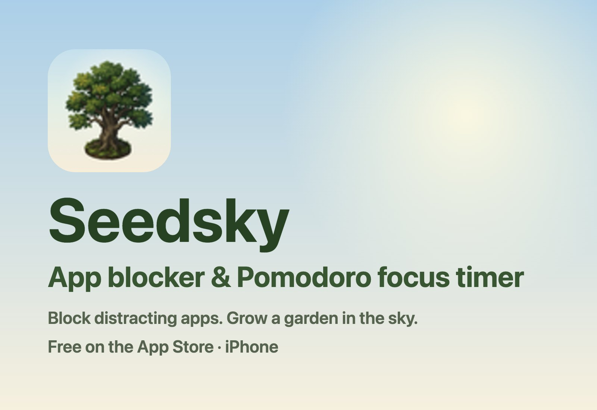

Bloque les apps qui te distraient.
Fais pousser un jardin dans le ciel.
Seedsky est un bloqueur d'apps et un minuteur Pomodoro pour iPhone. Reste concentré : une plante peinte à la main pousse sur tes îles flottantes. Pars trop longtemps, et elle fane.
Télécharger dans l'App StoreGratuit · iPhone · Sans compte, sans pub, sans suivi

Comment ça marche
- Choisis une durée et une plante, de 5 minutes à 3 heures. 25 minutes font un Pomodoro classique.
- Bloque les apps qui te distraient : réseaux sociaux, jeux, vidéos. Elles restent fermées jusqu'à la fin de la session. Autorise celles dont tu as besoin, comme ton app de cours ou de sport.
- Pose ton téléphone. Ta plante grandit, du germe jusqu'à l'arbre adulte, et rejoint ton jardin.
Tout pour rester concentré
Bloqueur d'apps
Basé sur le Temps d'écran d'Apple. Une app bloquée affiche un écran calme, sans échappatoire avant la fin de ta session.
Minuteur Pomodoro et révisions
Des sprints courts ou de longues sessions. Une catégorie par matière ou activité, chacune avec son objectif du jour.
Un jardin vivant
Des îles flottantes peintes à la main, près de 50 espèces, plus de 100 décorations, des animaux, le jour et la nuit.
Pièces, séries et objectifs
Une minute de concentration rapporte une pièce. Atteins ton objectif jour après jour : bonus et plante majestueuse.
Statistiques
Ton temps de concentration par semaine et par mois, tes meilleures heures, ton herbier et tes séries.
Respect de ta vie privée
Aucun compte, aucun serveur, aucune pub, aucun suivi. Tout reste sur ton iPhone.
Pensé pour les étudiants
Réviser tes examens, écrire ton mémoire, faire tes devoirs : donne à chaque matière son jardin, fixe un objectif quotidien, et regarde tes îles grandir avec tes heures de travail.
Questions
Seedsky est-il gratuit ?
Oui. Seedsky est gratuit sur l'App Store, sans publicité et sans compte.
Comment fonctionne le blocage des apps ?
Seedsky utilise le Temps d'écran d'Apple, pour ton propre iPhone. Les apps bloquées restent fermées jusqu'à la fin de la session. Les apps autorisées, comme ton app de cours ou de sport, restent libres et ta plante continue de pousser. Les autres te demandent confirmation avant de s'ouvrir.
Puis-je l'utiliser comme minuteur Pomodoro pour réviser ?
Oui. Une session dure de 5 minutes à 3 heures : 25 minutes pour un Pomodoro classique, ou plus pour les révisions.
Que se passe-t-il si je quitte l'app ?
Un temps de grâce protège ta plante : reviens vite et elle se remet. Verrouiller l'écran ne compte pas. Le mode doux met la session en pause à la place.
Seedsky collecte-t-il mes données ?
Non. Lis la politique de confidentialité.